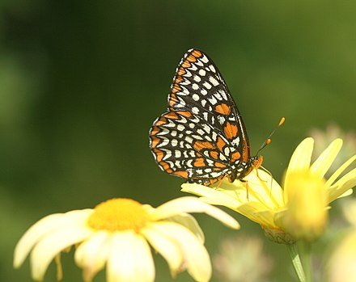
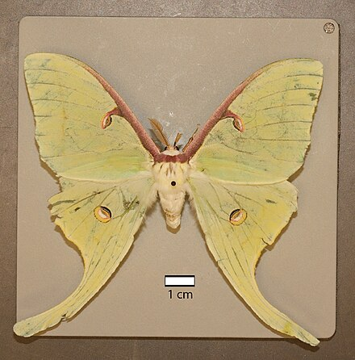
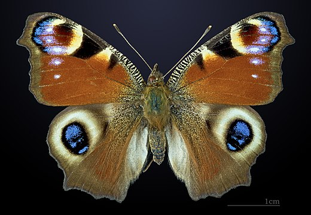

E. phaeton, commonly known as the Baltimore Checkerspot, is a butterfly in the Nymphalidae family. It is native to the northeastern US and I do research on them in the bug lab.
E. phaeton">
A. luna, also known as the luna moth, is a moth in the Saturniidae family. It is native to eastern North America and has large wings with tails.
A. luna">
A. io, commonly known as the peacock butterfly, is a butterfly in the Nymphalidae family and is found across Europe and Asia. The top of its wings have bright colors and the underside are camouflaged which can suprise predators when the wings open and close.
A. io">